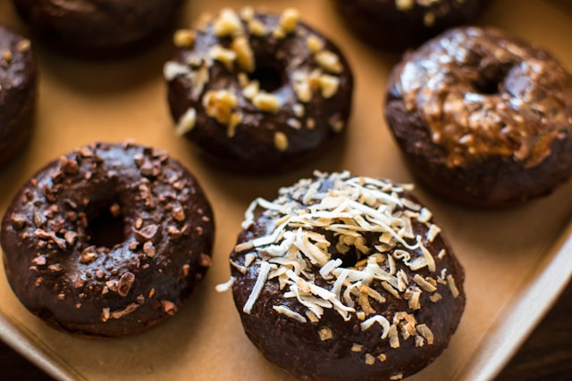

Chocolate Donuts

Glazed Chocolate Donuts
Try these glazed donuts for a decadent sweet! This recipe required no frying resulting in an easier process. Adding toppings can elevate these even more!
Ingredients
- cooking spray
- 2 cups all-purpose flour
- 3/4 cup white sugar
- 1/2 cup unsweetened cocoa powder
- 1 teaspoon baking powder
- 1 teaspoon baking soda
- 1 teaspoon salt
- 3/4 cup milk
- 2 tablespoons milk
- 2 egg
- 2 tablespoons butter, melted
- 1 teaspoon vanilla extract
- ¼ cup butter
- 1 tablespoon heavy cream
- 1 tablespoon milk
- 2 teaspoons corn syrup
- 1 teaspoon vanilla extract
- 1 ounce bittersweet chocolate, chopped
- 1 ounce semisweet chocolate chips
- 1 ¼ cups confectioners' sugar
Steps
- Preheat the oven to 325 degrees F (165 degrees C). Coat 11 donut cups with cooking spray.
- Whisk flour, sugar, cocoa powder, baking powder, baking soda, and salt together in a bowl. Beat in ¾ cup plus 2 tablespoons milk, eggs, 2 tablespoons melted butter, and 1 teaspoon vanilla extract using an electric mixer until well blended.
- Pour batter into a resealable plastic bag; cut off 1 corner. Pour batter into donut cups, filling each to about ¾ full.
- Bake in the preheated oven until a toothpick inserted into a donut comes out clean, about 10 minutes. Cool slightly, 5 to 10 minutes.
- Meanwhile, combine ¼ cup butter, cream, 1 tablespoon milk, corn syrup, and 1 teaspoon vanilla extract in a small saucepan over medium-low heat until butter is completely melted, 2 to 3 minutes. Reduce heat to low; stir in bittersweet and semisweet chocolate until melted, 2 to 3 minutes. Off heat, whisk in confectioners' sugar until combined.
- Dip cooled donuts into glaze; cool and let set, about 15 minutes.
Home